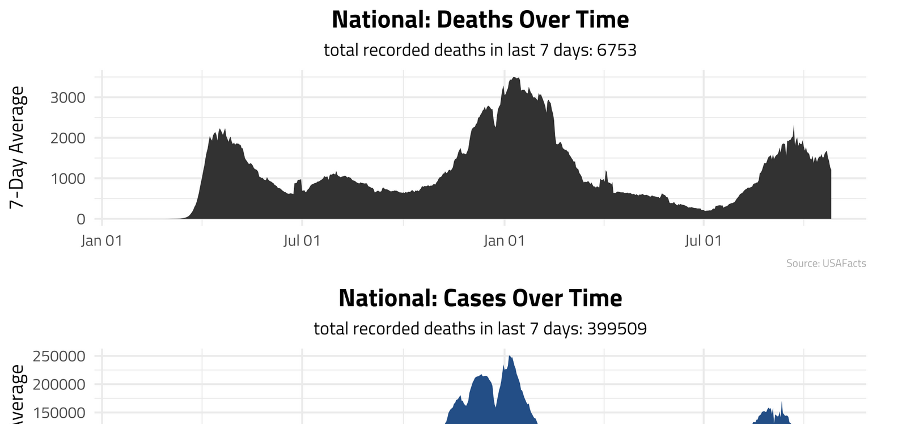
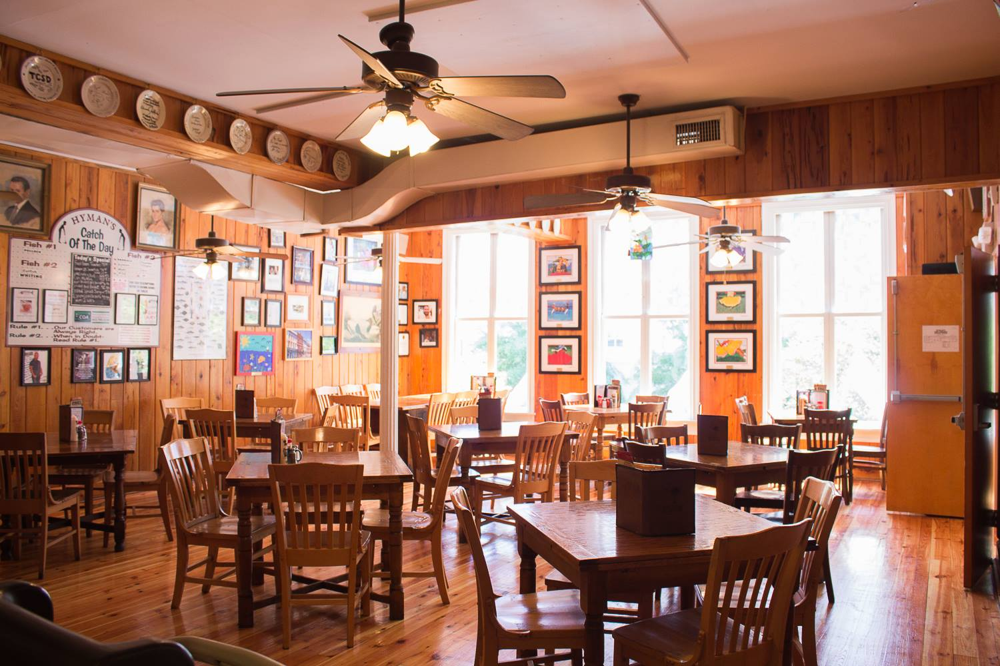

alexbass.me
About Me
Content
CV
Categories
All
(10)
CI/CD
(1)
Data Journalism
(6)
Life Hacks
(1)
Project
(4)
Python
(1)
Quarto
(1)
R
(7)
Shiny
(2)
Statistics
(2)
Survey Research
(2)
My Content
Simple Resume Template with Quarto and LaTeX
Life Hacks
Quarto
Sep 2, 2022
County-Level Analysis of School Shootings
Project
Data Journalism
Python
Statistics
Aug 19, 2022
7 Facts You May Not Know About Latter-Day Saints
Survey Research
Data Journalism
Mar 3, 2022

Weekly COVID Email Update
Project
CI/CD
R
Nov 8, 2021
My Facebook Data… EXPOSED
Data Journalism
R
Apr 10, 2021
Latter-Day Saints: Growing Pains In The GOP
Data Journalism
R
Survey Research
Dec 9, 2020
Presenting…My Election Model!
Project
Statistics
R
Sep 18, 2020

Word Search Puzzle Generator
Project
R
Shiny
Jul 31, 2020
Ford, Toyota, Honda? Who Takes the Cake?
Data Journalism
R
Jul 10, 2020
Mobility in the COVID-19 Era: Urban vs. Rural
Data Journalism
R
Shiny
Jun 9, 2020
No matching items